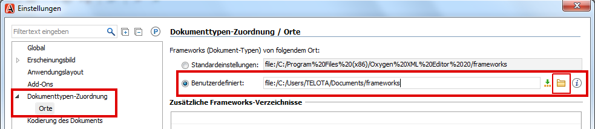
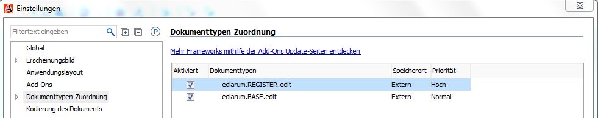

Se integran dos frameworks específicos de ediarum en Oxygen para que las
funcionalidades de ediarum estén disponibles en su entorno editorial de
Oxygen.
Resumen del procedimiento:
Descarga los dos frameworks de ediarum a su ordenador local.
Cambia la carpeta predeterminada en la que Oxygen XML Author
gestiona los frameworks. De esta manera se evitan problemas con los derechos de
acceso por parte del sistema operativo (especialmente Windows).
Crea un framework nuevo para su edición. Crea este framework como una extensión
de ediarum.BASE.edit para que tenga acceso a todos los
funcionalidades de ediarum. Después de terminar la
configuración básica, puede guardar las configuraciones específicas de su
entorno de edición dentro de este framework.
Conocimientos necesarios:
Conocimientos básicos de github
Cree una carpeta para todos los frameworks de Oxygen en su sistema de archivos
local .
Descarga a la nueva carpeta de frameworks los siguientes repositorios de GitHub
(en GitHub: pulse el botón Latest release, guarda el
archivo ZIP en una ubicación local y extraigalo):
Cree en la carpeta de frameworks un directorio adicional, donde puede agregar
luego el framework específico de su edición.
Recomendación: Mantenga ediarum como la primera parte
del nombre de la carpeta para indicar que el framework específico de su edición
es una extensión de ediarum. Por ejemplo:
ediarum.miEdición.edit
Asegúrese de que la carpeta de frameworks tenga la siguiente estructura:
frameworks
ediarum.BASE.edit
css
fonts
icons
resources
schemata
templates
ediarum.REGISTER.edit
css
resources
schema
ediarum.miEdición.edit
Cambie la ubicación de almacenamiento de frameworks en Oxygen
, de modo que la ubicación nueva apunte a la
carpeta que contiene todas las carpetas de framework.
Seleccione el menú Options > Preferences en Oxygen.
En la ventana de Preferences abierta,
seleccione la página Document Type Association > Locations.
Active la opción Custom.
Haga clic en el icono de carpeta para seleccionar la ruta.

Haga clic en OK para cerrar la ventana
Preferences.
Reinicie Oxygen XML Author.
En la página Options > Preferences > Document Type Association se muestran ambos frameworks de
ediarum.

Cree un framework extendido para su edición.
Seleccione el framework ediarum.BASE.edit en la
página Document Type Association (No haga doble
clic!) y haga clic en Extend.
Introduzca el nombre del framework de su edición en el campo
Name:.
Recomendación: Utilice el mismo nombre que ha usado para la carpeta
del framework de su edición en el sistema de archivos. Por ejemplo:
ediarum.miEdición.edit
Active la opción External para
Storage: .
Indique la ruta hasta el archivo .framework que se encuentra dentro de
la carpeta de su edición. Por ejemplo:
ediarum.miEdición.edit/ediarum.miEdición.edit.framework.
Utilice el icono de carpeta para seleccionar el archivo.
Haga clic en OK para cerrar la ventana de
Preferences.